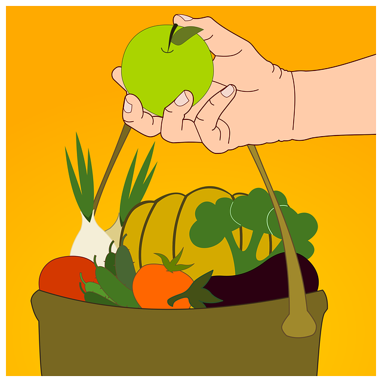

Alimentación
11/04/2018 RominaFior Alimentación
Una alimentación vegana solamente es saludable cuando se tienen en cuenta y se respetan una serie de reglas. Lamentablemente, según he podido observar, estas pocas reglas no siempre se tienen en cuenta, en especial cuando la dieta vegana se lleva a cabo por motivos éticos. Sin embargo, precisamente quien es vegano por motivos éticos debería alimentarse de forma saludable para poder constituir un ejemplo positivo del veganismo y motivar a otras personas a llevar este tipo de alimentación. Los ejemplos negativos suelen provocar reacciones contra el veganismo.